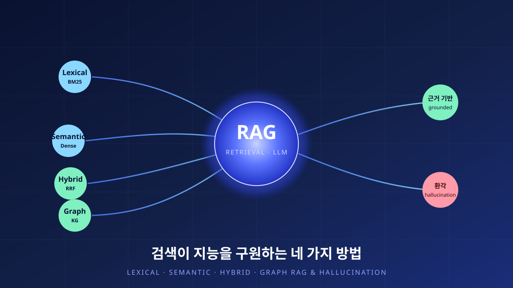

최신 기고
AI·LLM 기술 해설과 연구 회고를 담은 기고문

AI · 기술해설18검색이 지능을 구원하는 네 가지 방법 — Lexical·Semantic·Hybrid·Graph RAG와 환각의 해부
대형언어모델의 지식은 학습이 끝나는 순간 굳어 버린다. 검색증강생성(RAG)은 모델 바깥의 문서를 끌어와 그 빈틈을 메운다. Lexical·Semantic·Hybrid·Graph 네 검색 아키텍처를 원리부터 해부하고, 그것이 환각을 어떻게 줄이며 무엇이 여전히 남는지를 짚는다.
 AI · 기술해설14
AI · 기술해설14거부를 지운 모델: Abliterated LLM의 위험과 존재 이유
언어모델의 ‘거부’는 가중치 속 한 방향으로 표현된다. 그 방향만 지운 무삭제 모델을 정상판과 나란히 시험한 기록, 그리고 위험과 필요 사이의 균형.
Research · 회고13
연구 회고LLM은 공간을 이해하는가: 7,650문항 공간추론 벤치마크
지도를 읽는 일은 사람에게 너무 당연하다. 6개 대형언어모델을 7,650문항으로 해부하며 ‘공간을 이해한다’는 말의 무게를 다시 쟀다.
 AI · 기술해설12
AI · 기술해설12지도를 읽는 언어모델: GeoLLM과 지식그래프
“가장 가까운 소각장이 어디냐”는 물음에 언어모델은 그럴듯하지만 틀린 답을 낸다. RAG·PostGIS·지식그래프로 그 빈틈을 메운 GeoLLM/GNLM 구축기.
 Research · 회고11
Research · 회고11카메라 없이 지도 위에 사람을 그리다: mmWave 지리참조
밀리미터파 레이더는 사람을 영상이 아니라 한 무리의 ‘점’으로 본다. 평균 3.5cm 오차로 실내를 지리참조하고, 이를 경기장 규모로 키운 이야기.
 AI · 기술해설10
AI · 기술해설10시간이 곧 성능이다: 적응형 병렬처리로 시뮬레이션을 가속하다
대도시 규모의 교통 시뮬레이션은 정확해질수록 느려진다. AI가 부하를 예측해 24개 코어에 계산을 나눠 담는 APE의 기록.